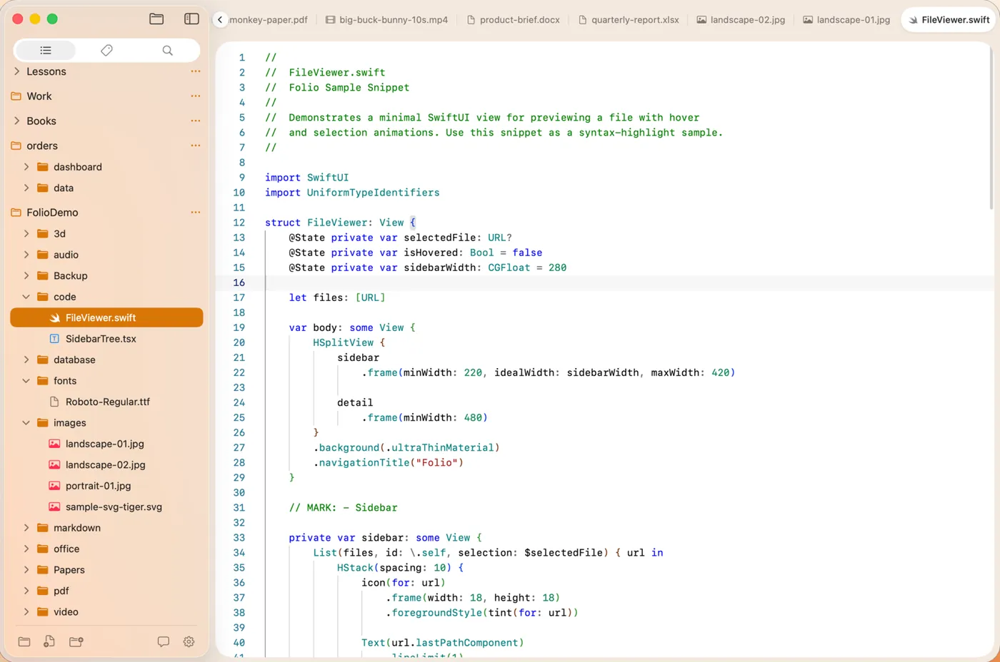
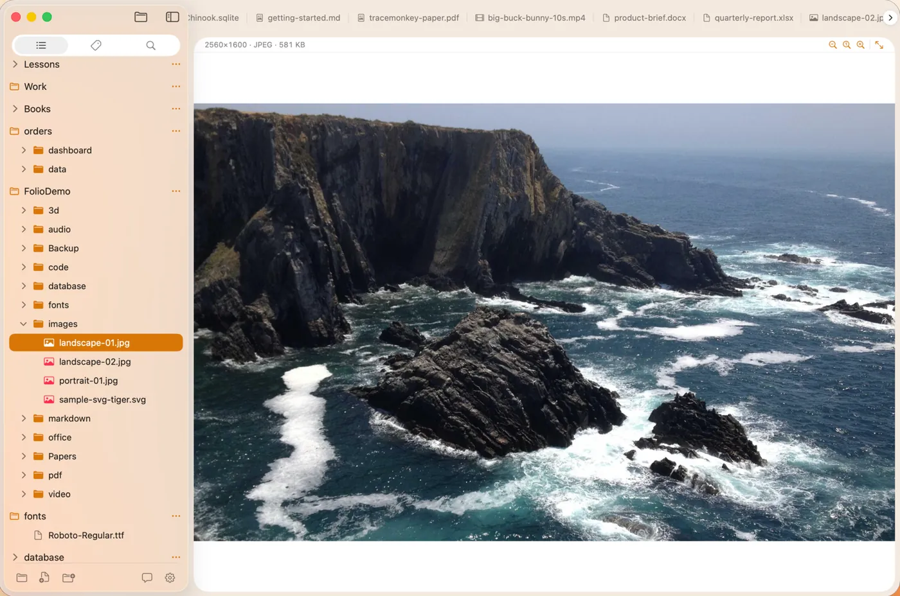
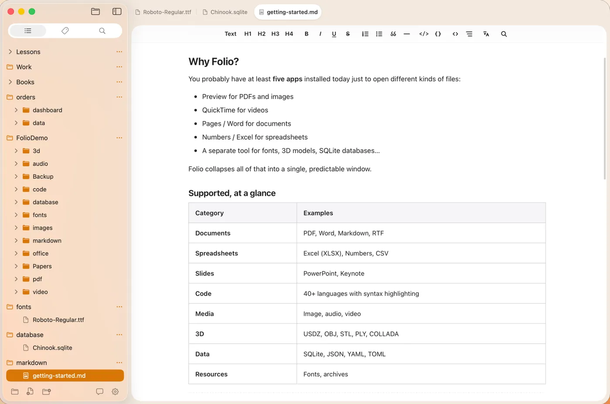
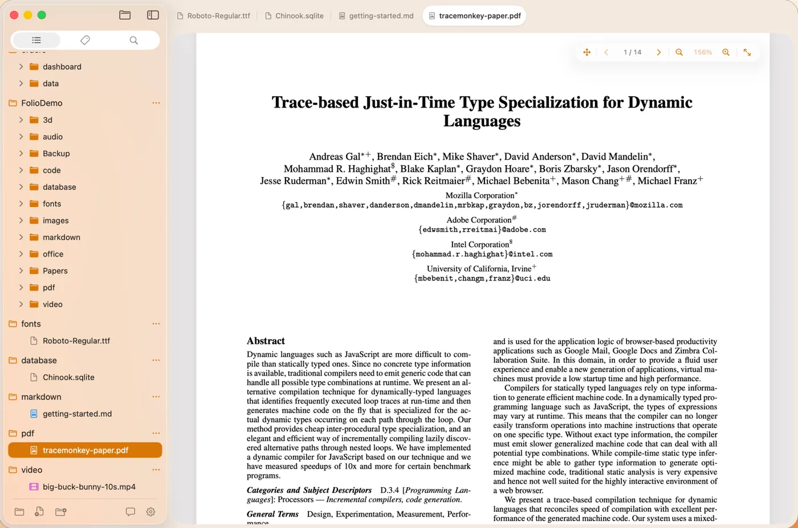
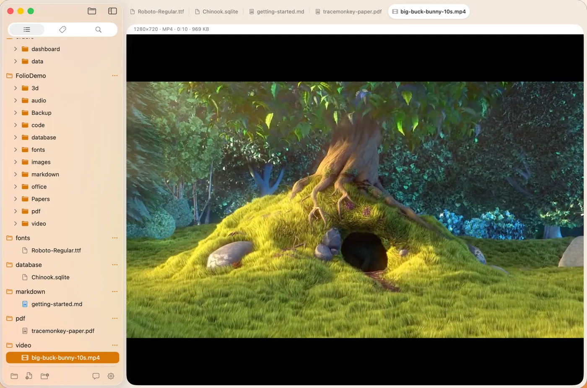

Full edition
AI CLI hub
Claude Code, Codex and Antigravity run as native TUIs inside Folio. Past Claude Code and Codex sessions are found automatically, so you resume from the sidebar.
Turn your Mac into one quiet, focused workspace. Documents, spreadsheets, slides, PDFs, notes, images, music and video — all in a single window.
Stop jumping between a dozen apps. Folio holds everything in one window.





Every popular programming language is ready. Crisp syntax colors, tidy indentation — code reads like prose, not a wall of text.
Even huge files open fast. Phone shots, web images, GIFs, vector files — open, zoom in, and read the details.
Write naturally, see results instantly. Headers, lists, tables, code blocks render as you type — no preview pane required. Offline translation built in.
No waiting for Office to launch. Word, Excel, PowerPoint, Pages, Numbers, Keynote and PDFs — double-click and read, clean and clear.
All major formats play instantly — no conversion needed. Keyboard shortcuts, subtitles, picture-in-picture, and easy on the battery.
Each one opens in a viewer built for it — with the small details that make it feel native, not converted.
Search inside, jump by outline, highlight every match.
Read it clean — or edit it right here and save back to .docx.
Open a workbook and read it — no Excel launch.
PowerPoint and Keynote decks, no app launch.
Pages and Numbers documents open natively.
Rendered like a published page, editable in place.
40+ languages, syntax-colored, and editable.
Huge files open fast; zoom in on the detail.
See the waveform while you listen.
Subtitles, picture-in-picture, easy on the battery.
Turn a model around with a drag.
Browse tables and rows — no database client.
Plain data as a clean, readable table.
Try a line of text in the face at a glance.
Peek inside a zip without unpacking it.
Each project gets its own tab. Switch with one click and you are exactly where you left off — folder, scroll position, last opened file.
Not just filenames. A single line in your notes, a phrase on page twelve of a PDF — found instantly, across every open workspace.
Open a Markdown note or a Word file and just start typing. What you edit is what you will read — no source, no preview pane, no round trip through another app.
A delicate interface paired with 15 thoughtfully tuned themes — from cream and midnight to moss and ink. Every file finds its own light.
Amber
Every detail is tuned so moving between files feels quiet and focused.
Glass surfaces that belong on macOS, following the system's light and dark.
Press Space on a Markdown, code or text file in Finder and see it rendered the Folio way.
A Quick Action sends any file or folder to Folio from the right-click menu.
Read EPUB books and CBZ comics, with your place remembered.
Press ⌘K to search file names and contents across your workspaces.
Translate notes with one tap — fast, and fully offline.
Transparent titlebar, adjustable width — your content is the star.
Everything runs on your Mac. Your files are never uploaded anywhere.
Turn a note into a Word document, or a Word file into Markdown.
Everything above, plus a terminal, Git, your AI command-line tools, tasks and automatic version snapshots. Distributed directly, outside the App Store.
Claude Code, Codex and Antigravity run as native TUIs inside Folio. Past Claude Code and Codex sessions are found automatically, so you resume from the sidebar.
zsh in a true PTY, with command blocks that show the path and Git branch. Several sessions, sorted the way you like.
Stage by hunk, stash, rebase, cherry-pick, blame, resolve conflicts in a merge editor, across several repositories.
Included in the Full edition: versions save themselves, with smart retention — the last 24 hours in full, then daily, weekly, monthly. Edited it wrong or deleted it? Bring it back.
Inbox, Today, Upcoming, Anytime and your own lists, with subtasks. A built-in MCP server opens your tasks to local AI clients — and one click can hand a task to Claude Code.
Translate a selection or a whole note against the original. Choose the backend: Apple, any OpenAI-compatible API you bring, or a local MLX model.
Folio is a universal file viewer for Mac. One app opens documents, spreadsheets, slides, PDFs, notes, code, images, music and video — replacing the dozen apps you usually juggle, in one quiet, focused window.
macOS Preview is built for a quick glance. Folio is built to stay: tabs, cross-file search, editing for notes and Word files, and 15 reading themes — turning "peek and close" into "open and work".
Yes. Markdown notes, Word (.docx) files and code are editable, and .docx is saved back as .docx. Other formats, such as PDF, spreadsheets and slides, open for reading and searching.
Folio supports macOS 15 and above, and runs smoothly on every Mac.
Folio quietly prepares when you open a folder, then only catches up on changes. Even folders with 10,000 files respond as you type — you won't notice it working.
Everything happens on your Mac. Folio never uploads your files anywhere — it is the default, with no cloud toggle to switch off.
The Mac App Store edition is free to download.
A separate build of Folio, distributed directly instead of through the App Store. It adds a terminal, Git, AI command-line tools, tasks and side-by-side translation, and includes automatic version snapshots. Everything in the chapters above is there too.
Make your Mac quiet. One window for every file.